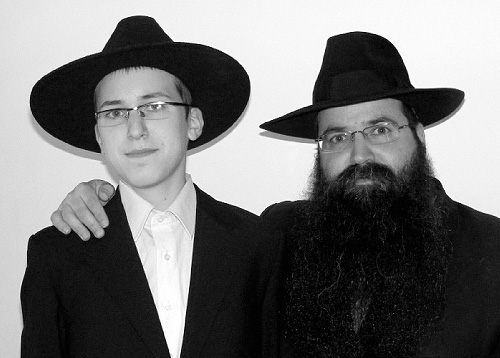
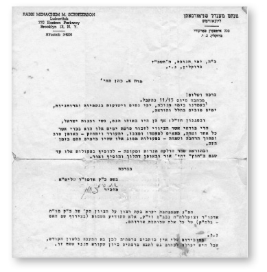
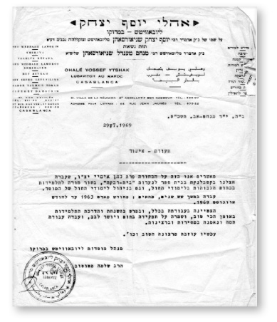
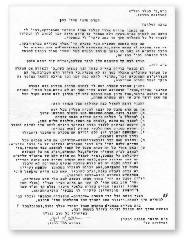

The Rebbe Kept His Promise
This is the story of Aimee Cohen and her sons Yakir and Sagi. It’s a story that began in a Chabad school in Morocco and continued with a personal connection to the Rebbe – a letter and a special yechidus.

THIRTEEN MINUTES IN YECHIDUS
Aimee Cohen was born in Safi, Morocco. Like many Jewish girls, she attended the Alliance school for teachers. When she graduated, she took a job at Beis Rivka in Casablanca, run by the shliach at the time R’ Yehuda Leib (Leibel) Raskin a”h.
Chabad schools at the time were desperate for professional and dedicated employees, and Aimee met the requirements. She became the girls’ madricha and was responsible for the secular studies curriculum. The challenge was enormous. The small staff had to deal with many students, some of whom did not know the basics of religious observant life. There were also discipline problems. Yet, the young madricha knew how to gain the girls’ cooperation. It was a pleasure to see the girls sitting and reciting the brachos together before and after meals, under her direction.
Life wasn’t easy for Aimee. She was orphaned of her father. Although she was of marriageable age, she hadn’t yet succeeded in finding a husband. It was as an employee in a Chabad school that her personal relationship with the Rebbe began. In 5727 she received her first letter from the Rebbe.
After a number of years of working in the Chabad mosdos, she went to the Rebbe in Sivan 5728/1968. R’ Raskin arranged yechidus for her, and he gave the Rebbe a report about her work. The Rebbe was sent a picture of 400 students sitting in the dining room and bentching under her guidance.
She had yechidus for thirteen minutes. Much of what was said during that meeting she has not repeated till this day, even to her family. The Rebbe began by praising her for her work and said he had received very positive reports about her devotion to her students. Then she asked the Rebbe about her burning issue: shidduchim. The Rebbe told her, “Change your location; change your mazal.” Then he gave her a bracha that she marry and said, “You will have Chassidishe children and grandchildren.”

RABBI RASKIN’S TEN RULES FOR A CHASSAN
Aimee returned to Morocco. She understood from the Rebbe’s answer that she should make aliya. R’ Raskin was sorry to see her go. He provided her with letters of recommendation that would help her as she continued her education and looked for work in Eretz Yisroel.
At the end of 5729 she made aliya together with her mother. First, she went back to school so she could get a teacher’s diploma that was recognized in Eretz Yisroel. Throughout this time, until she married, R’ Raskin kept in touch with her. He encouraged her to continue the Chassidic lifestyle she began in Morocco.
R’ Raskin’s letters show his devotion to those who worked alongside him, his Chassidic outlook, and his fiery hiskashrus to the Rebbe. An especially fascinating letter is one that he wrote that contains “Ten Commandments” for looking for a chassan. This is what he wrote (translation):
B”H
2 Kislev 5731
Casablanca, Morocco
To Ms. Aimee Cohen,
Blessings and Peace!
I received your letter from the month of Elul after I returned from America. I had a lot to do in Beis Rivka and did not find the time to write to you until today, mainly to respond to all your questions to the best of my ability.
You write that your best years were when you were in Beis Rivka. I agree with you 100%, because Lubavitcher mosdos that are under the Rebbe’s leadership have a unique magnetism especially for those who are as devoted to the mosad with all their might as you were.
Many thanks for your invitation to visit you, and G-d willing the time will come for that too.
I did not understand precisely which mosad you are in now; because if the advantage of the school is that they eat kosher, that is not enough, because the main thing is the environment, who the teachers are, etc. I would be interested in knowing how much time you need to stay there in order to get the certificates you need.
As for the boy you met, it is hard for me to write opinions from a distance, especially when I don’t know him. The first problem, that he is younger than you, is not bad, but the second problem is more significant. Since you write that you have a solution for this, that he will accept what you want, that is something else.
I would like to ask some questions about this boy:
1 – Whether he commits to put on t’fillin daily,
2 – To keep the laws of family purity as is written in Shulchan Aruch,
3-To daven three times a day, Shacharis, Mincha, Maariv,
4-To keep Shabbos, to cover his head, and to wear tzitzis,
5-To have set times to learn Torah, mainly laws about how to be a Jew, and
6-That he agree for you to wear a wig.
7-When Hashem gives you children, whether he agrees to educate them and raise them to Torah and mitzvos,
8-(Since you are already Lubavitch-Chabad) Whether or not he agrees that your lives be run according to the ways of Chassidus and mainly as per the Rebbe’s instructions,
9-If he has in fact accepted to conduct himself as such as of right now, then write to the Rebbe about all the details as well as the commitments you have made and ask his opinion if this is your match. (As for your saying that you wrote about this before and still did not receive an answer, that is not terrible since many people have lately not received an answer to their letters. You can mention in your letter that you wrote previously and still did not receive a response, and you can mention that you already met the Rebbe and that you worked in Beis Rivka in Morocco.)
10-All this should be with joy and without any pressures, and it would be good if you had a connection with a Chabad Chassid (maybe my sister’s son-in-law and his wife who live in Kiryat Malachi Shikun Nachalat Har Chabad; his name is R’ Yehoshua Mondshine) who will help you with the serious problem.
I think that through the Ten Commandments – points – that I wrote, you can decide what to do and may Hashem help you that all your decisions be good.
With that I will conclude with the hope that everything works out well for you and that you write about what is happening with you. And in whatever way we can help, we will do so very happily.
With blessings for everything good, materially and spiritually,
Yehuda Leib Raskin
P.S. Special regards from Mrs. Raskin and the children

R’ RASKIN REPORTS ABOUT THE FAILED COUP
The shidduch referred to in that letter did not work out. Aimee, who was upset by this, wrote to R’ Raskin who responded in a letter dated Shevat 5731. The following are excerpts from the letter in which he mentions how he misses the atmosphere that she helped create at the school:
Don’t be downhearted, for surely he was not your match. We Jewish people believe in G-d and everything G-d does is for the good; we just need patience.
… Over here there is not much new. There is much work. This year, 123 new students registered in Beis Rivka, so the total number of students is 400. We need a lot of reinforcements, especially suitable madrichot during lunch time. Whoever walks in to pay a visit during the noontime meal recalls the work you did.
Now, every week, we publicize a sicha of the Rebbe in French. I was able to obtain a copying machine and I organize all the work at Beis Rivka, and we send about 1500 copies every week to every school and shul. We set a price for the year at 5 dirham. Enclosed is the last sicha we put together here.
He thanks her for the news that at the end of the year she will receive a teacher’s certificate, “that is really nice.”
In a letter dated Erev Rosh HaShana 5732, R’ Raskin begins in the usual way: “The situation is as always, there is a lot of work and we lack good teachers, especially madrichot,” but then he tells her what preceded – the “usual situation.”
Surely you heard what happened here regarding the coup that, thank G-d, failed. The king remains on his throne and may Hashem help him continue to rule. For those who were not here it is impossible to describe the great miracles that Hashem did for us. If, G-d forbid, the opposing side was successful, they would have simply, heaven forbid, made an end to the Jewish people (that is what they planned based on papers that were found afterward), but the Guardian of Israel does not slumber nor sleep.

Aimee finally found her shidduch and married in 5732. From the reports he received from her, R’ Raskin sensed that leaving a Chassidic environment and not having a connection with Chassidim in Eretz Yisroel had had a negative effect on her. He wrote her:
We were thrilled to hear the happy news about your marriage. A special thank you for the pictures that everyone was happy to see. Thank G-d, your happy day arrived and your personal life is settling into a routine.
Yes, it’s a pity I was not present at your wedding, yet it is only physically that place and time separate us, but spiritually, there is no separation … In any case, after all is said and done we rejoiced here and drank l’chaim to you.
Surely you and your husband will not mind if I ask about the Ten Commandments (as you refer to them), especially when now there is the added detail of family life in which one must be exceedingly careful in matters of purity etc. in order to merit to raise generations of Jews in the way of holiness and purity.
I would be happy to receive a letter from your husband too about what his outlook on religion is etc.
Surely you wrote to the Rebbe; and if you haven’t, it is not too late to ask for his bracha (especially when the Rebbe expressed one to you years ago).
… Over here there is nothing particularly new. The saying “Much work, a lack of people, numerous problems from day to day” always applies, but thank G-d we have upon whom to rely, our Father in Heaven, and His faithful servant the Rebbe who always gives us strength, encouragement, and courage…
R’ Raskin couldn’t do more than write and encourage her. Unfortunately, the young Cohen family did not live a religiously observant life and the children were sent to secular schools. There were children and grandchildren, but they certainly were not “Chassidish.”
WHO WAS THE RABBI IN THE DREAM?
Their oldest son, Yakir Tzemach, was born in Beit Shaan. After graduating elementary school, he went to a middle school on kibbutz Beit Zera in the Jordan Valley. It certainly could not be described as providing a Jewish education. For high school he attended the naval academy near Netanya in the seaman’s track. Upon completing his army service, he married and studied economics and business management. He lived in the Kiryat Eliezer neighborhood of Haifa.
One morning, Yakir woke up remembering a disturbing dream that he had during the night. He was standing facing an old rabbi who was sitting behind a wooden desk. The wall behind him was wood-paneled and the rabbi looked at him for a long time. Yakir had no idea who the rabbi was, nor could he identify where the rabbi was. As a rational person who did not believe in mysticism, he tried to forget about it.
However, for four nights in a row he had the same dream. This was disturbing to him, and he began talking to people he knew about the dream. No one could explain it to him. At the end of the week, on Motzaei Shabbos, Yakir dreamt about the old rabbi again. This time, the rabbi was standing and praying and Yakir was standing next to him.
Yakir couldn’t take it any more and asked his brother Sagi for help. Although Sagi was also not religious, as a child he had been interested in religion and he had even spent a few years in yeshiva. This is why Yakir thought Sagi could be of help to him.
Sagi asked him to describe the rabbi and Yakir said, “He had a white beard and a hat…”
His brother smiled and said, “All the rabbis look like that.”
Sagi suggested that Yakir visit various rabbis in B’nei Brak and Yerushalayim. Yakir did so, but the rabbis had no idea what to tell him. Although they had white beards and hats, none of them looked like the man he saw in his dreams.
Yakir knew from a psychology course he had taken that it was not possible to dream about something one had never seen. It bothered him that he did not recognize anything he had seen in his dream.
He told his brother that nobody knew what to tell him and that he had had enough and would stop thinking about it. Then he had the dream again, for the sixth time.
THAT’S THE RABBI FROM MY DREAM!
A week later, Yakir had a dream in which he saw himself standing near the same rabbi in prayer. He remembers three words the rabbi said: “Es Tzemach Dovid.” Yakir couldn’t place those words (which are from the Shmoneh Esrei). Not only hadn’t he davened in his life, he had no idea what the Shmoneh Esrei is and how to use a Siddur. The one thing that sounded familiar was the word that was part of his family name – Tzemach HaKohen.
Yakir reported to his brother, who promised to look into the matter. Yakir couldn’t put it out of his mind because every night that week he had the same dream.
That week, Sagi went to a store called HaMatzliach. He is a computer technician and he was asked to fix a printer. When he walked into the store he felt he had landed in another world. A man with a large yarmulke and a long white beard greeted him. On the spur of the moment, he decided to tell the man about his brother’s recurring dreams.
The man listened and then said, “Send your brother to me.”
The bearded man in the store was R’ Shmuel Frumer, a shliach in Krayot who has brought hundreds of people closer to the Rebbe.
Sagi reported to Yakir that there was a man who was willing to help. It took Yakir, who was busy with work over his head, an entire week until he was able to arrange a time to meet. He finally appeared one morning as the store opened.
Yakir told R’ Frumer about his odd, recurring dreams.
“R’ Frumer went to the side of the store and took an envelope from his jacket pocket which had inside it a Mincha-Maariv siddur. In the binding was a picture which he showed to me.”
Yakir nearly fell off his chair. That was the man from his dream! And he appeared the same way in the picture as he had in the dream, with a wood-paneled wall behind him. Yakir had been seeing the Rebbe in 770.
CHASSIDISHE CHILDREN AND GRANDCHILDREN
Yakir sat and spoke with R’ Frumer for seven hours, from eight in the morning until three in the afternoon. He learned that he hadn’t dreamed about just any rabbi, but about the Rebbe. They spoke about who this Rebbe is, the Nasi and Navi of the generation and Moshiach, whose very purpose of being is the revelation of Atzmus U’Mehus in the world. R’ Frumer explained that this Rebbe also has demands that he makes of every Jew, and Yakir drank it all in.
That day, Yakir committed to beginning to keep Torah and mitzvos. This was Sivan, a few days before his birthday on 8 Sivan (even this information was newly discovered during their meeting).
Yakir began visiting the shul in his neighborhood, but he had no idea what to do in a shul. He was an intelligent person, a former naval officer in a managerial position with an academic degree, but when he stepped into the shul, it all seemed to be taking place in Chinese. When they told him for the first time to take a Chumash, he asked what that was. Then he learned that there is another book called a siddur. He was starting from zero.
With his characteristic stubbornness, he overcame the difficulties. The local shliach, R’ Yossi Lifsh, helped him. Within a short time, Yakir made up a gap of years. He soon began wearing a kippa, his beard began to grow, and he started wearing a suit and sirtuk. He did all this under the guidance of R’ Frumer. He didn’t miss any of his shiurim or farbrengens. He also spent a lot of time talking to him.
Like his mother, Yakir decided to change his location in order to change his mazal. He moved from Haifa to Krayot and switched his three children to Chabad schools. His son Toim is a Tamim and his daughters Bareket and Maayan are Achos T’mimim.
Sagi began following his example. His difficulties were less in the realm of knowledge and more in the practical implementation of Halacha. Hardest of all was to decide to run his family life as the Torah requires of a Kohen. After long conversations with R’ Frumer, he mustered the strength to make his move, and a short while later he started a beautiful kosher family.
THE REBBE KEPT HIS PROMISE
A few months later in Tishrei, Yakir went to the Rebbe together with his mashpia R’ Frumer. He was thrown straight into the intensity of 770 – the huge crowd, the t’fillos, the dancing at the Simchas Beis HaShoeiva, and the “washing machine” of Simchas Torah. The organized administrator discovered that it wasn’t that bad to sleep at night on a mattress on the floor next to other Chassidim.
The miracles began as soon as they began their preparations for the trip. It was right after the Twin Towers had fallen and the United States had toughened up the requirements for a visa. Miraculously, Yakir received his visa within half an hour.
Simchas Torah is what is etched deepest into his memory. Although on Sukkos he broke his leg and had to have it put in a cast, he stood on the pyramid and watched in fascination as thousands of people danced for hours. Being a Kohen, he went up to duchan in the Rebbe’s minyan and trembled in excitement over the enormous z’chus.
The bearded man with the hat and Moshiach flag in the lapel of his sirtuk, who is strictly observant, along with his children and nephews, leave no room for doubt: the Rebbe kept his promise. Aimee Cohen has Chassidishe children and grandchildren.
Beis Moshiach. "The Rebbe Kept His Promise." Beis Moshiach, no. 839 (June 29, 2012).